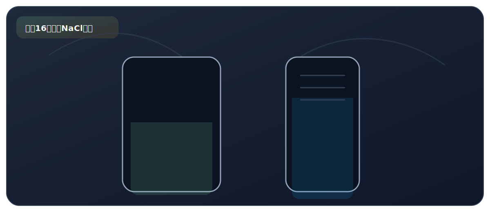

实验十六、一定溶质质量分数 NaCl 溶液的配制

来自 PDF《化学实验基础知识及课本实验总结》的整理。建议：先读"实验原理"，再背"操作顺序"，最后用"误差分析/注意事项"拿分。
实验目标
- 会配制一定溶质质量分数的 NaCl 溶液：计算、称量、量取、溶解。
核心原理
- 溶质质量分数 w = m(溶质) / m(溶液) × 100%。
关键步骤（怎么做）
- ①计算：算出所需 NaCl 和水的质量（例：配 50g 6% NaCl 溶液，需 NaCl 3g，水 47g 即 47mL）。
- ②称量：用托盘天平称量 NaCl（左物右码），称量纸放在左右两盘。
- ③量取：用量筒量取所需水的体积（选择略大于量取体积的量筒），用胶头滴管精确到刻度。
- ④溶解：将 NaCl 倒入烧杯，加入量取的水，用玻璃棒搅拌至完全溶解。
- ⑤装瓶贴标签：将配好的溶液转移到试剂瓶中，贴上标签（注明溶液名称和溶质质量分数）。
现象（看到什么）
- NaCl 固体溶于水后，烧杯中得到无色透明的溶液。
高频考点（怎么拿分）
- 溶质质量分数偏小的原因：①NaCl 不纯（含杂质）②称量时药品与砝码放反（左码右物），实际称取量偏小 ③转移时有 NaCl 洒落 ④量取水时仰视读数（读数偏小，实际量取偏多）。
- 溶质质量分数偏大的原因：①量取水时俯视读数（读数偏大，实际量取偏少）②倒水时有水洒出 ③砝码生锈导致 NaCl 称多。
- 量筒读数规范：视线应与量筒内液体凹液面的最低处保持水平。
- 天平使用：先调零、再调平；左物右码；称量结束砝码放回砝码盒、游码归零。
- 易潮解或腐蚀性药品（如 NaOH）应放在玻璃器皿（小烧杯）中称量，不能放在纸上。
- 玻璃棒在溶解中的作用：搅拌，加速溶解。
PDF摘录（原文提取，供对照）
要点
- 实验用品 仪器：天平、称量纸、烧杯、玻璃棒、药匙、量筒、胶头滴管、 空试剂瓶、空标签瓶。
- 药品：NaCl、蒸馏水。
- ① 计算：配制 50 g 质量分数为 6% 的 NaCl 溶液，需要 NaCl 3 g；水 47 g。
- 操作步骤 ② 称量：用天平称量所需质量的 NaCl，放入烧杯中；
- ③ 量取：用量筒（选取量程为 50 mL 的量筒）量取 47 mL 的水， 倒入盛有 NaCl 的烧杯中；
- ④ 溶解：用玻璃棒搅拌，使 NaCl 溶解。
- 称量前要将游码调至零点，然后调节天平平衡；
- 称量 NaCl 固体时，应先在左右托盘各放一张质量相等的称量 纸；
注意事项
- 称量时遵循“左物右码”原则；
- 量取水读数时，视线要与量筒内液体凹液面的最低处保持水平；
- 称量结束，砝码放回砝码盒，游码归零；
- ◼ 配好的溶液需要贴上标签，标签中要包含溶液名称和溶质质量 分数（如：质量分数 6% NaCl 溶液）。
- 溶质的质量分数增大，主要原因是溶质多了或溶剂少了，具体 有：
- ① 量好的水倒入烧杯时，有部分洒在了烧杯外；
- ② 量取水时俯视读数（读数比实际值偏大），造成实际取用的水的 体积比理论值偏小等；
- ③ 砝码生锈，导致 NaCl 称多了，浓度变大。
- 造成溶质质量分数偏低的主要原因是溶质少了或溶剂多了，具
误差分析
- 体有：
- ① 称量 NaCl 时，违反了“左物右码”的原则，造成实际称取的固体 质量小于理论值；
- ② 称量好的固体没有全部倒入烧杯，有部分散落在烧杯外或沾在 了纸上；
- ③ 量取溶剂时仰视读数（读数比实际值偏小），造成实际取用的溶 剂体积比理论值偏大；
- ④ NaCl 中含有杂质。
- 用质量分数为 6% 的 NaCl 溶液配制 50 g 质量分数 为 3% 的 NaCl 溶液 稀释前的溶质质量 = 稀释后的溶质质量 依据 需要 6% 的 NaCl 溶液 25 g（以 1 mL = 1 g 计算）；蒸馏水 25 g。
- 说明 无需用到天平。
- 造成 3% NaCl 的溶质质量分数偏高：
- ① 量取浓溶液时仰视读数；
- ② 量取蒸馏水时俯视读数。
- 造成 3% NaCl 的溶质质量分数偏低：
- ① 量取浓溶液时俯视读数；
- ② 量取蒸馏水时仰视读数。
- （1）用固体配制溶液的步骤：计算、称量、量取、溶解、装瓶 贴标签。
- 实验总结 （2）用浓溶液配制稀溶液的步骤：计算、量取、混匀、装瓶贴 标签。
- 提醒：易潮解或有腐蚀性的药品（如 NaOH）应放在玻璃器皿中称 量。